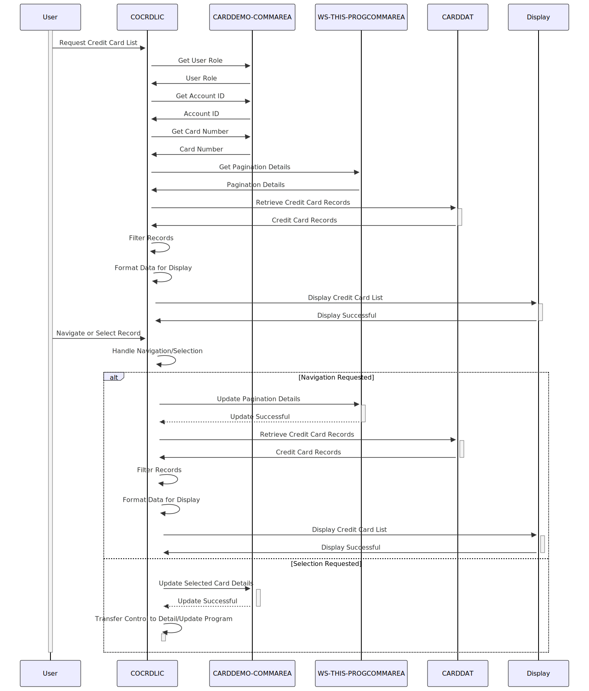

Gerado em: 1º de outubro de 2024
Título do Documento: Especificação de Exibição e Navegação da Lista de Cartões de Crédito
Descrição Resumida: Esta especificação detalha a funcionalidade para exibir e navegar em uma lista de cartões de crédito dentro de um Sistema de Gerenciamento de Cartão de Crédito. Este módulo atende tanto usuários administrativos que podem visualizar todos os registros quanto usuários regulares que podem visualizar apenas cartões associados às suas contas.
Histórias do Usuário: Como Analista de Dados, preciso visualizar uma lista de cartões de crédito para acessar e analisar dados do cartão de crédito.
Épico Relacionado: 3 - Gerenciamento de Cartão de Crédito
Requisitos Técnicos:
Exibir Lista de Cartões de Crédito: Este método recupera e exibe uma lista de cartões de crédito com base na função do usuário e nos filtros aplicados.
CDEMO-USRTYP-USER: Tipo de usuário - Usuário (não administrador) ou Administrador) de CARDDEMO-COMMAREA.CDEMO-ACCT-ID: Número da conta para filtragem) de CARDDEMO-COMMAREA.CDEMO-CARD-NUM: Número do cartão para filtragem) de CARDDEMO-COMMAREA.WS-CA-SCREEN-NUM: Número da página atual) de WS-THIS-PROGCOMMAREA.CDEMO-USRTYP-USER for verdadeiro), recupere todos os registros de cartão de crédito.CDEMO-ACCT-ID fornecido em CARDDEMO-COMMAREA.CDEMO-ACCT-ID e CDEMO-CARD-NUM se fornecido.WS-MAX-SCREEN-LINES (o valor padrão é 7) registros por página.WS-CA-SCREEN-NUM e solicitações de navegação do usuário (teclas PF7/F8).COCRDLIC, mostrando o Número da Conta, o Número do Cartão e o Status do Cartão.Filtrar Registros de Cartão de Crédito: Este método filtra registros de cartão de crédito com base em filtros de número de conta e cartão.
CARD-RECORD: Registro do Cartão de Crédito recuperado do arquivo CARDDAT.CC-ACCT-ID: Valor do filtro de ID da conta da entrada do usuário.CC-CARD-NUM-N: Valor do filtro de Número do Cartão da entrada do usuário.FLG-ACCTFILTER-ISVALID: Sinalizador indicando se o filtro de ID da conta é válido.FLG-CARDFILTER-ISVALID: Sinalizador indicando se o filtro de Número do Cartão é válido.FLG-ACCTFILTER-ISVALID for verdadeiro, verifique se CARD-ACCT-ID corresponde a CC-ACCT-ID. Caso contrário, exclua o registro.FLG-CARDFILTER-ISVALID for verdadeiro, verifique se CARD-NUM corresponde a CC-CARD-NUM-N. Caso contrário, exclua o registro.WS-DONOT-EXCLUDE-THIS-RECORD é definido como verdadeiro se o registro deve ser incluído, caso contrário, WS-EXCLUDE-THIS-RECORD é definido como verdadeiro.Navegar na Lista de Cartões de Crédito: Este método lida com solicitações do usuário para navegar até a próxima página ou página anterior de registros de cartão de crédito.
WS-CA-SCREEN-NUM: Número da página atual.WS-CA-FIRST-CARD-NUM: Número do Cartão do primeiro registro na página atual.WS-CA-LAST-CARD-NUM: Número do Cartão do último registro na página atual.WS-CA-FIRST-CARD-ACCT-ID: ID da conta do primeiro registro na página atual.WS-CA-LAST-CARD-ACCT-ID: ID da conta do último registro na página atual.WS-CA-SCREEN-NUM e recupere a página anterior de registros.WS-CA-SCREEN-NUM e recupere a próxima página de registros.WS-CA-FIRST-CARD-NUM, WS-CA-LAST-CARD-NUM, WS-CA-FIRST-CARD-ACCT-ID e WS-CA-LAST-CARD-ACCT-ID.WS-CA-SCREEN-NUM, WS-CA-FIRST-CARD-NUM, WS-CA-LAST-CARD-NUM, WS-CA-FIRST-CARD-ACCT-ID e WS-CA-LAST-CARD-ACCT-ID para gerenciar a paginação.Selecionar Cartão de Crédito para Detalhes/Atualização: Este método lida com a seleção do usuário de um cartão de crédito da lista para visualizar detalhes ou realizar atualizações.
CRDSEL na tela.VIEW-REQUESTED-ON ou UPDATE-REQUESTED-ON) para indicar a ação solicitada.CDEMO-ACCT-ID e CDEMO-CARD-NUM em CARDDEMO-COMMAREA com os detalhes do cartão selecionado.COCRDSLC (Visualização de Detalhes do Cartão) ou COCRDUPC (Atualização do Cartão) com base na ação selecionada.Modelos Relacionados:
CARDDEMO-COMMAREA: Estrutura de dados compartilhada para comunicação entre programas.
CDEMO-USRTYP-USER (Boolean): Indica se o usuário é um usuário regular. Verdadeiro para usuários regulares, falso para administradores.CDEMO-ACCT-ID (Integer): ID da conta para filtrar cartões de crédito (aplicável apenas para usuários regulares).CDEMO-CARD-NUM (String): Número do Cartão de Crédito para filtragem.CDEMO-FROM-PROGRAM (String): Nome do programa de chamada.CDEMO-FROM-TRANID (String): ID da transação do programa de chamada.CDEMO-LAST-MAP (String): Nome do último mapa acessado (tela).CDEMO-LAST-MAPSET (String): Nome do conjunto de mapas que contém o último mapa acessado.WS-THIS-PROGCOMMAREA: Estrutura de dados para preservar o contexto específico do programa entre as chamadas.
WS-CA-SCREEN-NUM (Integer): Número da página atual para exibir registros de cartão de crédito.WS-CA-LAST-PAGE-DISPLAYED (Integer): Indica se a última página de registros foi exibida.WS-CA-NEXT-PAGE-IND (Character): Indica se existe uma próxima página de registros.WS-CA-LAST-CARD-NUM (String): Número do Cartão de Crédito do último registro exibido na página anterior.WS-CA-LAST-CARD-ACCT-ID (Integer): ID da conta do último registro exibido na página anterior.WS-CA-FIRST-CARD-NUM (String): Número do Cartão de Crédito do primeiro registro exibido na página atual.WS-CA-FIRST-CARD-ACCT-ID (Integer): ID da conta do primeiro registro exibido na página atual.CARD-RECORD: Estrutura de dados que representa um registro de cartão de crédito.
CARD-NUM (String): O número do cartão de crédito.CARD-ACCT-ID (Integer): O número da conta associado ao cartão de crédito.CARD-ACTIVE-STATUS (String): O status do cartão de crédito.Configurações:
WS-MAX-SCREEN-LINES: Número máximo de registros de cartão de crédito a serem exibidos por página. O valor padrão é 7.CARDDAT: Caminho para o arquivo VSAM contendo dados do cartão de crédito.CARDAIX: Caminho para o arquivo VSAM contendo o índice alternativo em CARDDAT para ID da conta.Melhorias de Código:
Melhorias de Segurança:
Diagrama Conceitual:
–Made by “Smart Engineering” (by Compass.UOL)–